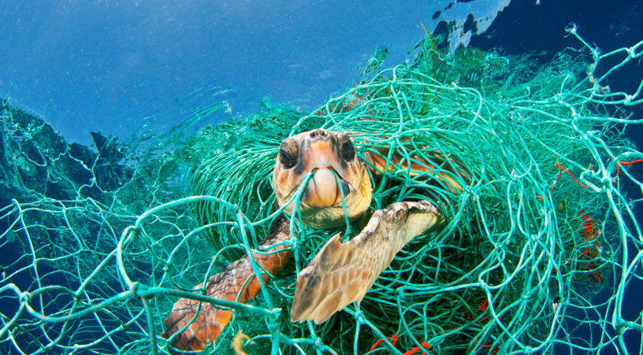
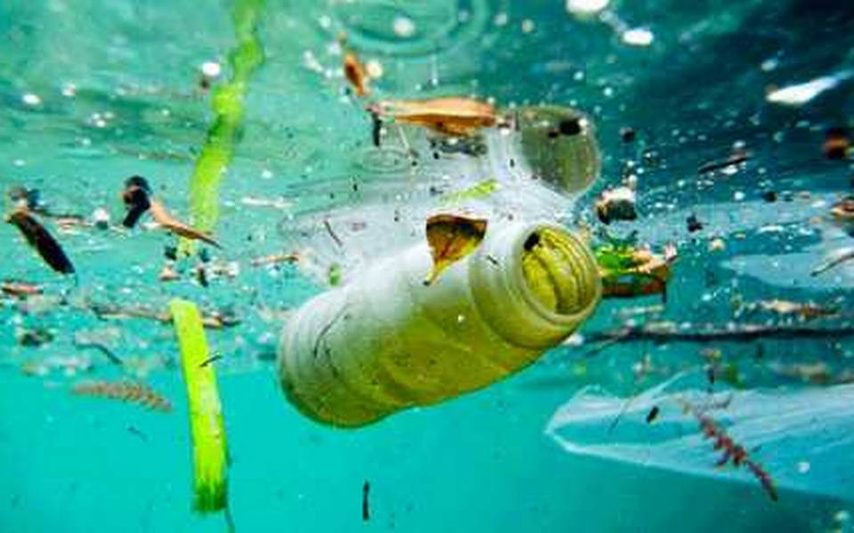

LA CONTAMINACION AMBIENTAL EN LA ACTUALIDAD

Cada vez somos más conscientes de la importancia de cuidar el medio ambiente.
Pero, ¿sabrías enumerar los siete tipos de contaminación ambiental más importantes?
Todavía queda mucho por hacer si queremos que las generaciones que vienen detrás tengan un planeta que heredar. Las consecuencias de un mundo contaminado son conocidas: cambio climático, efecto invernadero, calentamiento global…
Conozcamos qué tipos de contaminación ambiental existen
¿Qué es la contaminación ambiental?
El planeta nos recuerda continuamente, y cada vez de forma más recurrente, que si alteramos su equilibrio,
las consecuencias son devastadoras a través de sequías, mega incendios, inundaciones, pérdida de la
biodiversidad y desastres naturales cada vez más feroces. El cambio climático ya es una realidad y miles
de personas, animales y plantas sufren sus efectos.
La contaminación no es más que un aliciente que hace que la crisis climática avance sin control. Nos referimos
a contaminación ambiental al ingreso de sustancias químicas nocivas en un entorno determinado. Este fenómeno repercute en el equilibrio de dicho entorno y lo convierte en un ambiente inseguro.
El medio ambiente y sus ecosistemas sufren de manera directa los perjudiciales efectos. Y es que la contaminación ambiental es una alternación negativa del estado natural de los seres vivos que habitan el planeta. Las causas de este tipo de contaminación dependen de varios agentes que varían según el ecosistema al que afecten.
A lo largo de la historia, la actividad humana ha sido la principal fuente de contaminación del planeta. Esto ha provocado la contaminación de nuestros entornos y la alteración del equilibrio ecológico del planeta. La contaminación ambiental supone un riesgo para la salud de todos los seres vivos del planeta.
La Organización Mundial de la Salud ya afirma que la mayor parte de los ciudadanos residen en áreas donde la contaminación ambiental está presente superando los límites establecidos como saludables.
Y es que muchas son las sustancias que repercuten negativamente no solo en la salud humana también en la de miles de especies de animales y plantas que ven alterados sus hábitats por los efectos de
la contaminación.
Tipos de contaminación ambiental
Contaminación atmosférica
También conocida como polución, es uno de los tipos de contaminación
ambiental más famosos.
"Se produce a causa de la emisión de
sustancias químicas a la atmósfera" que afectan directamente
a la calidad del aire.
El más conocido es el monóxido de carbono. Pero existen otros como
el dióxido de azufre, CFCs (clorofluorocarbonos)
y óxidos de nitrógeno. Pero, ¿de dónde proceden estas sustancias nocivas?
• Gases expulsados procedentes de combustibles fósiles (como los liberados
por un tubo de escape de un coche).
• Desastres naturales como los incendios.
• La quema de basuras.
• Los gases que liberan las fábricas y los procesos de obtención de energía no limpia.
• La agricultura y ganadería intensiva.
Contaminación acústica
Si vives en un barrio muy ruidoso, cerca de un aeropuerto, autopistas o de una zona de discotecas sabrás muy bien
de lo que hablamos. La contaminación acústica se produce con cualquier ruido excesivo ya sea en proporción, frecuencia,
tono, volumen o ritmo entre otros .
Además de ser muy molesto, puede provocarnos estrés, trastornos del sueño, pérdida de audición e incluso afecciones
cardiovasculares. Pero también altera negativamente el equilibrio de los ecosistemas. En el caso de las aves, por ejemplo,
influye en sus migraciones y ciclos reproductivos.
Contaminación lumínica
Se produce especialmente en las ciudades durante la noche y hace referencia a la iluminación artificial excesiva que emiten
las poblaciones. De igual manera que la acústica, este tipo de contaminación ambiental no compromete la supervivencia de los
seres humanos. Sin embargo, produce enfermedades como las relacionadas con la visión, alteraciones del sueño o migrañas.
También afecta a los ecosistemas nocturnos ya que provoca a animales e insectos problemas de orientación y alteraciones en
sus ciclos biológicos.
Contaminación visual
Es todo aquello que altera visualmente el paisaje natural. Hace referencia a todos los elementos que no son naturales y que
nos envían estímulos visuales. Pueden ser vallas publicitarias, torres eléctricas o minas a cielo abierto.contaminacion-visual
Nuestro cerebro tiene una determinada capacidad de absorción de datos. El exceso de formas, luces, colores e información hace
que no pueda procesar todos estos datos debidamente. Todo ello perjudica a la salud de los ojos, altera la tensión y produce
estrés.
Contaminación térmica
Seguro que alguna vez has escuchado las graves consecuencias que puede tener para el medio ambiente que la Tierra aumente su
temperatura. Esto está relacionado con el último de los tipos de contaminación ambiental más importantes: la contaminación
térmica.
El aumento de la temperatura (o calentamiento global)afecta a los polos y losglaciares . Se calcula que la Antártida ha
multiplicado su deshielo por cuatro en los últimos 25 años, lo que está provocando (lo estamos viviendo ya) consecuencias
muy negativas. Entre las más importantes se encuentran la subida del nivel del mar, la alteración del equilibrio de los
ecosistemas o cambios en las corrientes marinas y el clima. No solo eso, también puede provocar la reaparición de
enfermedades.
Si desea leer más articulos...